Does the optical RPM deck agree with DShot bidirectional telemetry on real C.1 flights? Bias, lag, and dropout across 38 merged logs (**272 motor-rows) — not a stability claim, not a policy change.
Latency vs policy: the deck is faster — lag is reported as positive when DShot lags the deck (typically a few ms, often on a 2 ms grid). DShot feeds control for reliability (deck reported zero on 2/4 motors in real 2-drone flight), not because it is the lower-latency channel.
Script · experiments/analysis/rpm_source_quality.py ·
Plots · ~/.pyenv/versions/flying_robots/bin/python experiments/analysis/rpm_source_quality.py ·
Metrics-only · python3 … --no-plots if matplotlib/NumPy clash ·
Outputs · experiments/analysis/out/rpm_source_quality/ ·
Full write-up · docs/43_RPM_Source_Quality.md
| Spike behaviour | DShot-only — deck stays in-band at every spike instant |
| Root cause | Best-fit, not confirmed: intermittent bidirectional DShot telemetry decode glitches (1–2 tick bursts) |
| Headline RMSE | rmse_robust_rpm — excludes |Δ| > 10k RPM on analysis plots (spikes marked, not hidden) |
| Diagnostic | rmse_raw_rpm — with spikes; never the headline |
| Firmware guard | rpm_get_all() (2026-09-29) protects future flights only — historical CSVs unchanged |
| In scope | Out of scope |
|---|---|
| Deck vs DShot as two measurements — agreement, timing, dropout | Reopening July's DShot/INDI root-cause story |
| Per-motor, per-vehicle, per-scenario behaviour on the real C.1 dataset | Proving closed-loop INDI stability from logs alone |
Top (cf_second) vs bottom (cf5) where both are logged |
Changing the standing indi_gains.rpm_source=1 policy |
Since 2026-09-16, DShot feeds control (rpm_source=1) because the
deck reported zero on 2/4 motors in real 2-drone flight — reliability, not speed.
C.1 flights are geometric on cf5; both sources are logged every flight.
Headline RMSE (full C.1 re-run, 29 Sep 2026): spike-filtered median
128.1 RPM vs raw diagnostic (with spikes) 802.9 RPM —
fleet_robust_rmse.json. Plots regenerated on desk with pyenv
flying_robots Python. A2 top-deck dropout remains open for
physical inspection.
Full table (formulas, masks, functions):
docs/43_RPM_Source_Quality.md. Lag: + ms = DShot lags deck.
| Metric | Role |
|---|---|
rmse_robust_rpm | Headline — excludes |Δ| > 10k RPM spikes |
rmse_raw_rpm | Diagnostic — dominated by DShot telemetry glitches |
bias_pct, lag_ms | Base valid mask; lag via cross_corr_lag |
deck_zero_pct | Dropout — deck path only (A2 top) |
| Merged C.1 CSVs | 38 | 21 / 23 / 28 Sep merges (glob under c1_*_merged) |
| Dual RPM present | 38 / 38 | zero missing |
| Motor-rows analyzed | 272 | per per_flight.csv |
| Spike samples (|Δ| > 10k) | 2121 | spike_investigation.json |
Raw .bin archives | 91 | not used — card filenames can invert the actual vehicle role, see usd_raw/*_PAIRING.md |
| uSD config | 48 ch · 500 Hz | usd_thesis_config.txt, both RPM sources logged always |
Lag convention: positive = DShot lags deck. Primary columns: robust (spike-filtered) bias % and RMSE; raw RMSE is diagnostic (with spikes). Values often land on a 2 ms grid (500 Hz).
| Scenario | Role | Flights | Bias % mean (robust) | RMSE mean (robust) | RMSE mean (raw) | Lag ms mean | Lag ms max | Deck-zero % worst |
|---|---|---|---|---|---|---|---|---|
| A1 | bottom | 7 | −0.12 | 158 | 871 | 0.7 | 4 | 0.0 |
| A1 | top | 7 | −0.15 | 121 | 729 | 4.3 | 44 | 0.0 |
| A2 | bottom | 4 | −0.16 | 134 | 784 | 1.0 | 2 | 0.0 |
| A2 | top | 4 | −0.58 | 333 | 925 | 4.5 | 34 | 69.8 |
| A3 | bottom | 8 | −0.18 | 130 | 808 | 1.9 | 4 | 0.0 |
| A3 | top | 8 | −0.19 | 114 | 764 | 1.3 | 24 | 0.0 |
| A4 | bottom | 5 | −0.16 | 136 | 857 | −0.1 | 2 | 10.5 |
| A4 | top | 5 | −0.16 | 126 | 799 | 0.7 | 6 | 9.9 |
| A7 | bottom | 3 | −0.11 | 138 | 672 | 1.5 | 2 | 0.0 |
| A7 | top | 3 | −0.18 | 111 | 659 | 5.5 | 36 | 0.0 |
| A8 | bottom | 3 | −0.18 | 115 | 728 | 2.2 | 6 | 0.0 |
| A8 | top | 3 | −0.19 | 116 | 731 | 0.0 | 10 | 0.0 |
| C5 | bottom (solo) | 8 | −0.21 | 122 | 739 | 2.6 | 24 | 0.0 |
Source ·
summary_by_scenario_vehicle.csv · per-flight · flight_summary_table.md ·
figures · overview_lag_bias_by_role.png, overview_robust_bias_by_role.png,
overlay_*, grid4_*, rolling_lag_* (spike markers on traces)
All under experiments/analysis/out/rpm_source_quality/. Titles use robust bias/RMSE.
Overlays and grid4 include a Δ-RPM panel; excluded spike samples shown as red × markers.
Rolling lag windows use the robust valid mask.
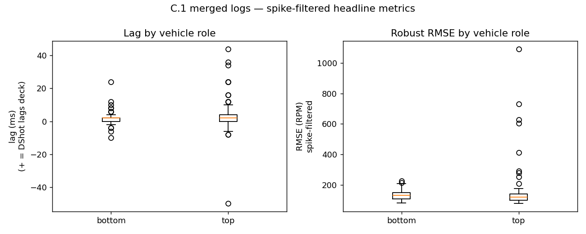
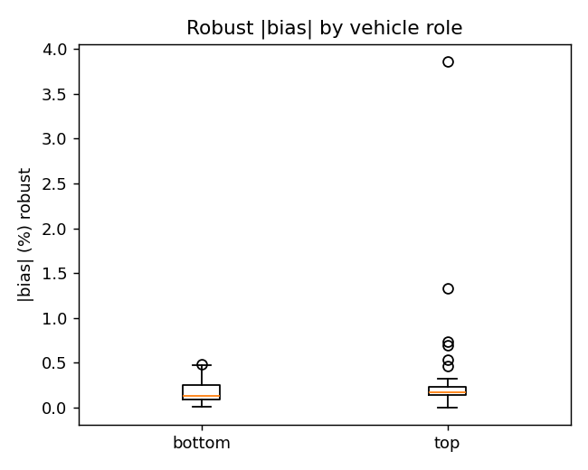
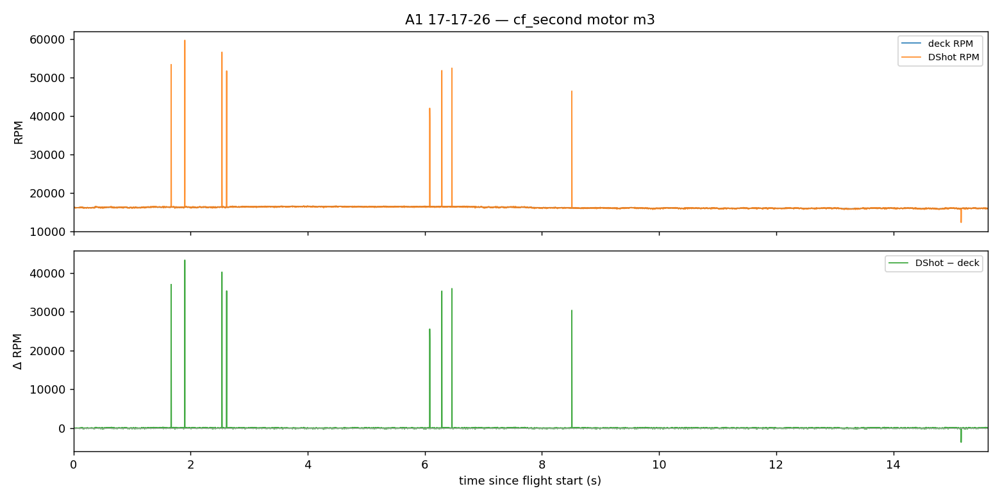
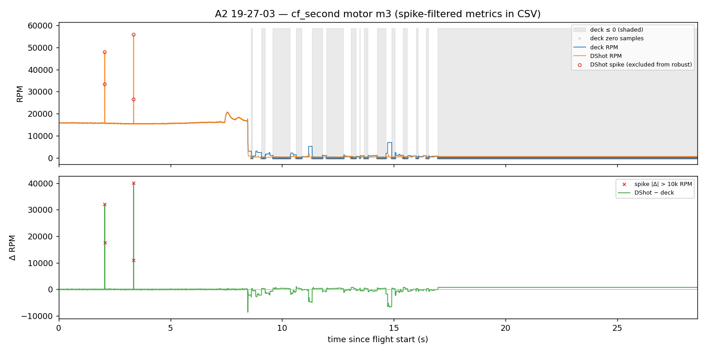
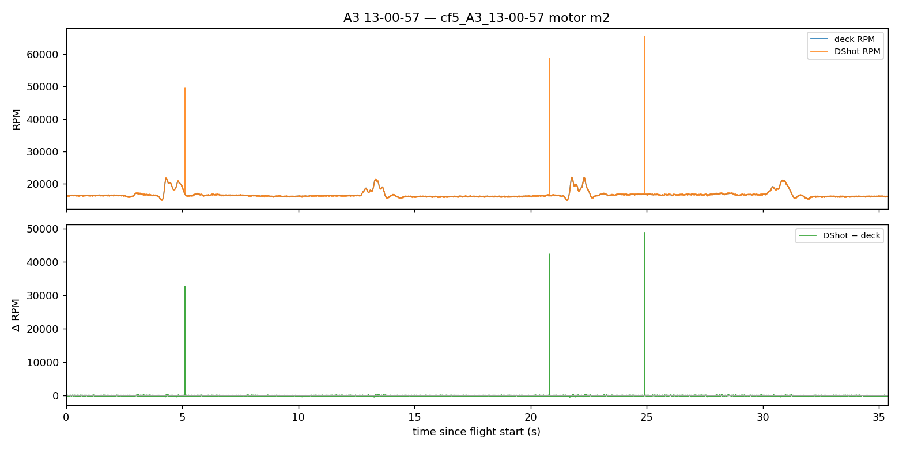
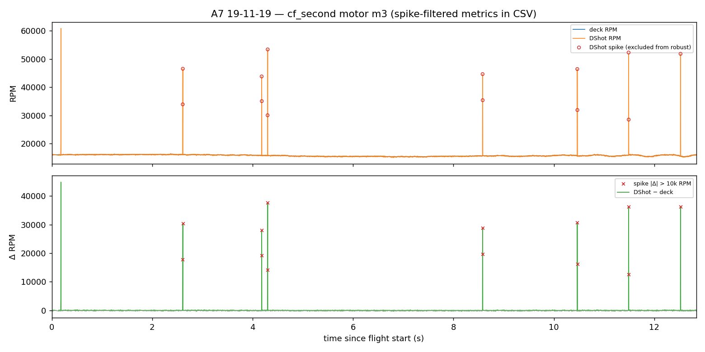
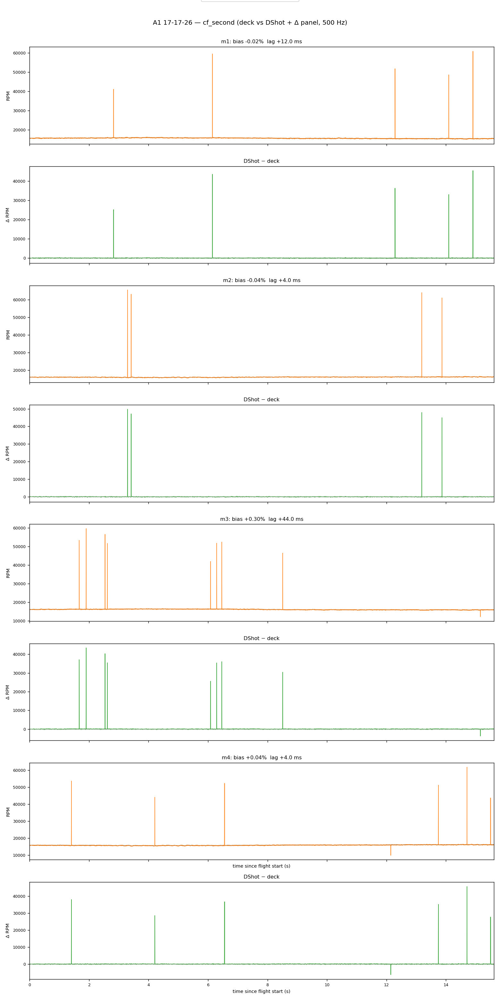
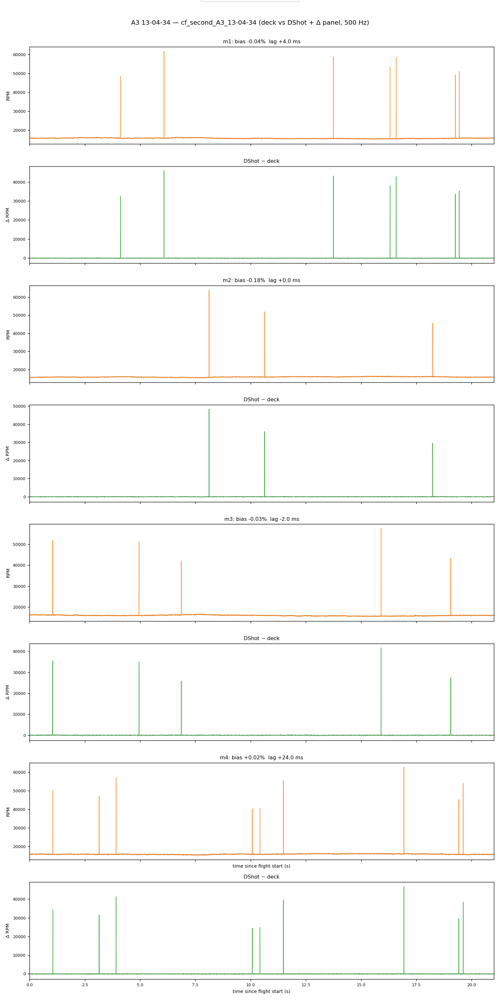
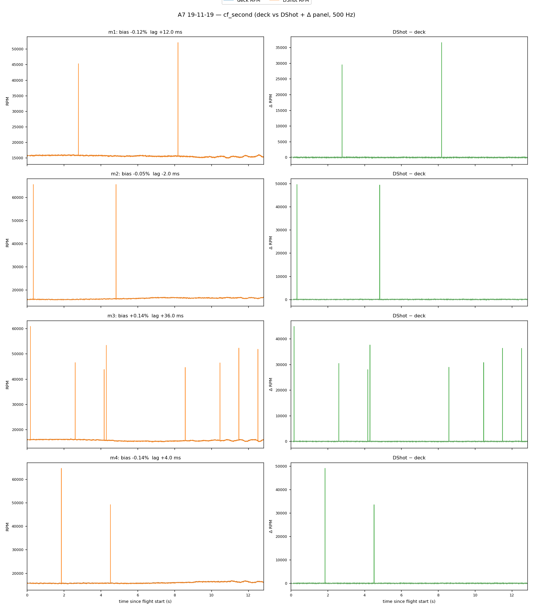
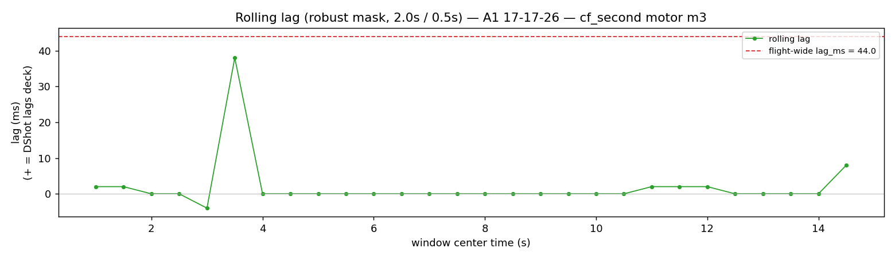
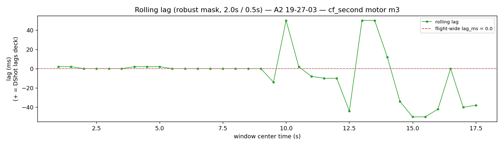
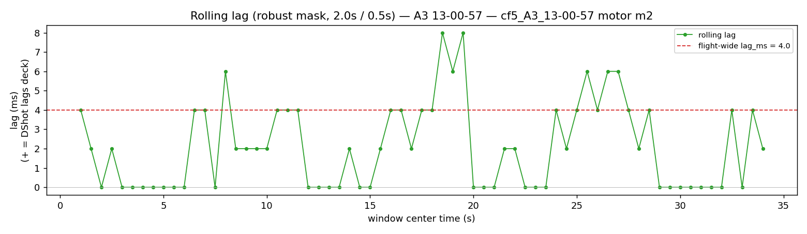
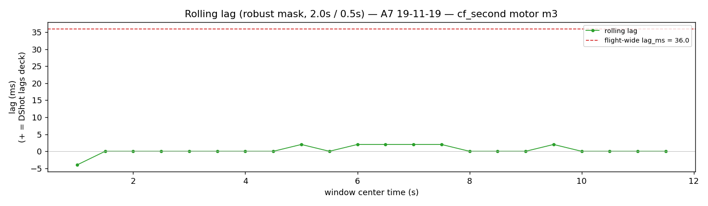
Both A2 merges: cf5 (bottom) — 0% deck-zero, all 4 motors, both flights. cf_second (top) — deck reads zero on 54–70% of samples, on every motor, both flights. DShot: 0% dropout on the same rows.
| Flight | Motor | Deck-zero % | DShot-zero % |
|---|---|---|---|
| 19-21-05 (top) | m1–m4 | 63.1 / 67.9 / 68.1 / 67.6 | 0.0 |
| 19-27-03 (top) | m1–m4 | 69.6 / 68.9 / 53.8 / 69.8 | 0.0 |
Scope: not m1-specific — airframe-wide on the top drone,
A2 only, among this dataset. No root-cause claim (marker geometry, deck driver, A2's
low-height/wide-radius profile — all untested here). Lag on this bucket reads as
0 ms because too few valid deck samples remain for a meaningful
correlation, not because the two sources actually agree instantly.
Wherever both vehicles are logged, cf_second (top) shows larger and noisier cross-correlation lag than cf5 (bottom) — e.g. A1 top mean 4.7 ms vs bottom 0.7 ms; A7 top max 36 ms vs bottom 2 ms. Isolated extrema (44 ms on one A1-top motor-row) should be read as noisy correlation peaks, not calibrated actuator delay — most values still sit on the 2 ms sampling grid. Bias stays sub-percent everywhere except where deck dropout dominates (A2 top, above).
During C.1 data collection, onboard uSD logging recorded both optical-deck RPM
(rpm.m1–4) and DShot bidirectional ESC RPM (motor.m1_rpm–m4_rpm)
at 500 Hz on every flight, independent of the control path. Since 2026-09-16, the
bottom (geometric) drone uses indi_gains.rpm_source=1 so DShot feeds torque
reconstruction and logged indi.a_res_* — chosen for motor dropout
reliability, not latency (DShot typically lags the deck by a few
ms). Agreement uses spike-filtered RMSE 128 RPM median motor-row vs
803 RPM raw diagnostic; spikes are DShot-only (best-fit decode glitches, not confirmed).
The deck stayed mounted for parallel logging. A2 top shows deck dropout; firmware
rpm_get_all() guard protects future flights only.